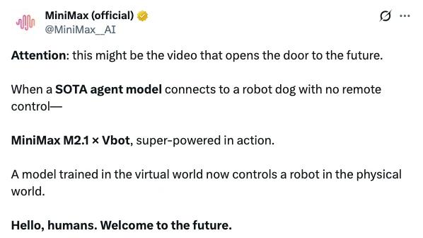
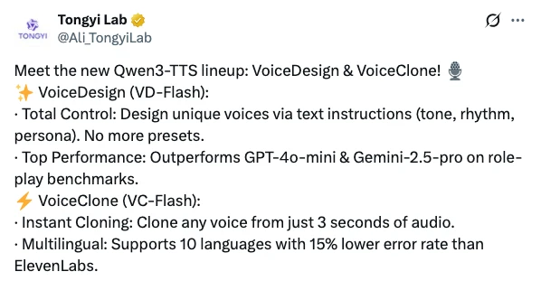
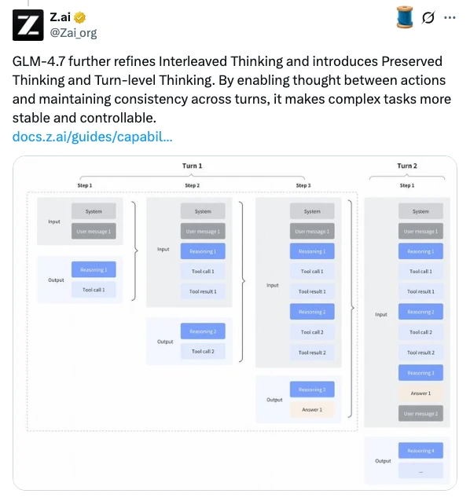
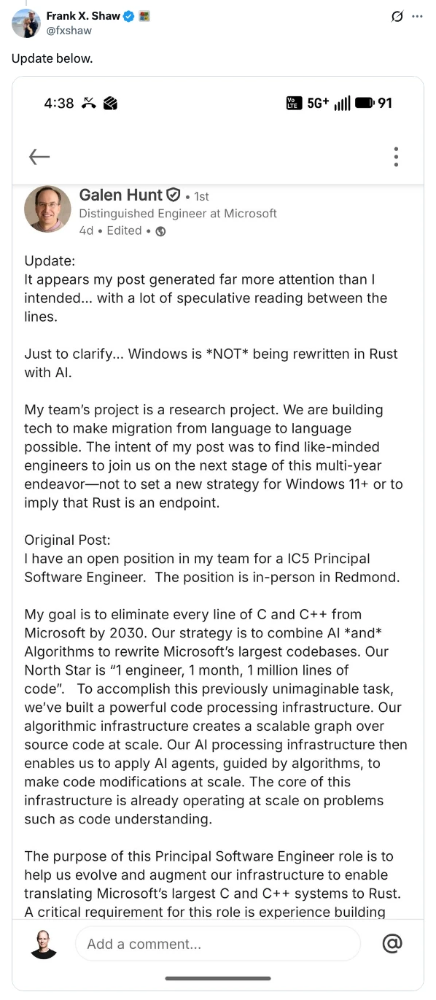
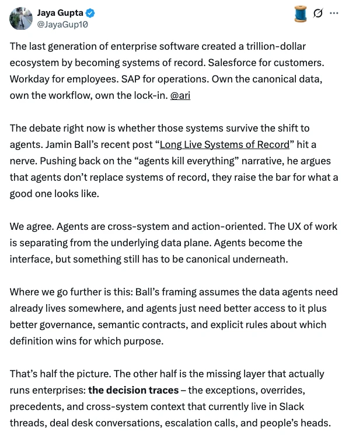
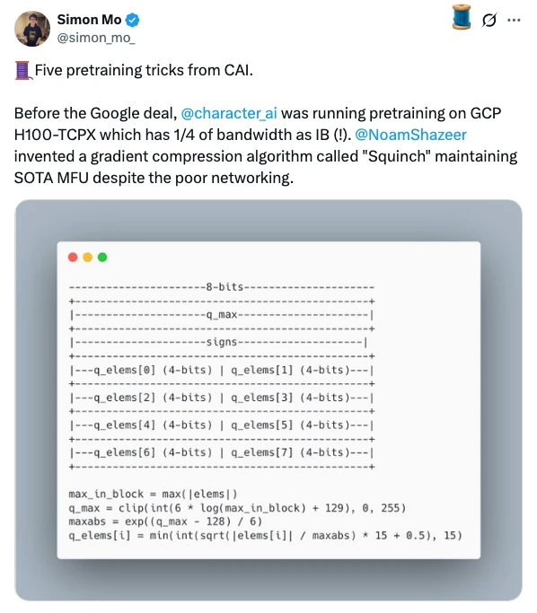
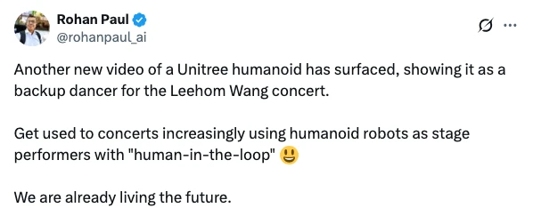
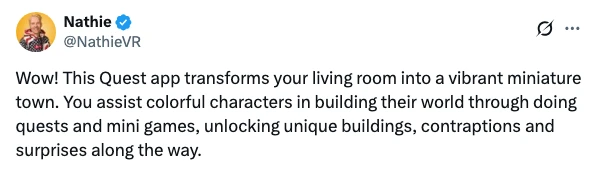

📚
view all previous issues
✨ see you next week!
![**Learn Your Way** is an experimental platform that re-imagines textbooks by transforming traditional educational content into dynamic and engaging learning experiences tailored to individual learners. It leverages cutting-edge AI from Google, combined with effective pedagogy, to personalize and enhance how students interact with subjects across various fields such as Economics, History, Sociology, Biology, ELA, Chemistry, Astronomy, Computer Science, Philosophy, Psychology, and Health.The platform offers interactive modules on diverse topics (e.g., economic systems, early human evolution, immune system disruptions, data structures, and more), with resources sourced from OpenStax. Backed by research and developed with educational experts, Learn Your Way aims to improve learning outcomes for every student. Users can try the platform or join a waitlist to upload their own PDFs for transformation.](assets/slide_2025_52/learn-your-way-dynamic-learning-experience-google.webp)
![Groq has announced a non-exclusive licensing agreement with Nvidia for its inference technology, aiming to expand access to high-performance, cost-effective AI inference globally. As part of this partnership, Groq Founder Jonathan Ross, President Sunny Madra, and other team members will join Nvidia to further develop and scale the licensed technology.Despite this collaboration, Groq will remain an independent company, with Simon Edwards taking on the role of CEO. GroqCloud services will continue uninterrupted, allowing developers to integrate Groq’s technology with ease.](assets/slide_2025_52/groq-nvidia-inference-technology-licensing-agreement-nvidia.webp)

![Liquid AI has released LFM2, a new class of Liquid Foundation Models (LFMs) optimized for on-device generative AI. LFM2 features a hybrid architecture combining multiplicative gates and short convolutions, delivering up to 2x faster CPU performance compared to Qwen3 and 3x improved training efficiency over previous models. Three dense checkpoints are available (350M, 700M, 1.2B parameters), and benchmarks show LFM2 outperforms similarly-sized models across knowledge, mathematics, instruction following, and multilingual tasks. The models excel in low-latency, memory-efficient deployment, making them suitable for edge devices like smartphones, laptops, and embedded systems.LFM2 was developed using STAR, Liquid AI’s neural architecture search engine, and trained with a mix of supervised fine-tuning and direct preference optimization. The models are released under an open license for research and smaller commercial uses and are available on Hugging Face and other platforms. Enterprises can contact Liquid AI for commercial licensing and custom solutions, while developers can deploy and fine-tune LFM2 for private, local AI applications.](assets/slide_2025_52/introducing-lfm2-the-fastest-on-device-foundation-models-on-the-market-liquid-ai.webp)
![**LFM2-2.6B-Exp** is an experimental checkpoint from Liquid AI, built using pure reinforcement learning on top of the LFM2-2.6B model. It is optimized for instruction following, knowledge tasks, and math, delivering strong performance relative to other models of similar size (notably outperforming much larger models on IFBench). The model supports eight languages and is best suited for agentic tasks, data extraction, retrieval-augmented generation (RAG), creative writing, and multi-turn conversations, though it is not recommended for knowledge-intensive or programming-heavy tasks.Technically, LFM2-2.6B-Exp uses a hybrid architecture with convolution and attention blocks, supports a 32,768 token context window, and was trained on a diverse, large-scale mixture of data. Recommended generation settings are provided, along with examples for running the model in Python using Hugging Face Transformers, vLLM, or llama.cpp (GGUF format). Guidance is offered for fine-tuning (SFT and DPO) using LoRA adapters and Colab notebooks. Tool use and structured conversation formats are supported, and the licensing is under LFM Open License v1.0.](assets/slide_2025_52/lfm2-technical-report.webp)
![CASA is a new method for integrating visual information into large language models (LLMs). Unlike the current approach—which inserts image tokens directly into the text stream and can overwhelm the context window in lengthy, image-rich conversations—CASA offers a more efficient solution for handling multiple images, especially in streaming scenarios.This advancement aims to make interactions with LLMs more practical when dealing with large numbers of images, improving both scalability and user experience.](assets/slide_2025_52/introducing-casa-a-new-way-to-input-visual-information-into-llms.webp)
![CASA (Cross-Attention via Self-Attention) is a novel technique for fusing visual and textual information in vision-language models. Unlike standard cross-attention or token insertion methods, CASA layers combine image-to-text cross-attention with local text-to-text self-attention within the same layer, enabling more efficient and effective multimodal fusion. This approach enhances performance—especially for detail-oriented tasks like document understanding and OCR—while retaining the computational and memory efficiency of cross-attention.Kyutai’s CASA models are evaluated on a variety of benchmarks, demonstrating significant improvements over traditional cross-attention models and narrowing the gap with token insertion methods. Furthermore, CASA’s design supports low-latency streaming applications, such as live video captioning, without the memory overhead typical of token insertion. The models and code are publicly available, and the technique can be flexibly integrated into new or existing vision-language architectures.](assets/slide_2025_52/casa-cross-attention-via-self-attention.webp)
![Qwen-Image-Edit-2511 is a major upgrade focused on enhanced image editing capabilities, offering stronger consistency in multi-person and complex scenes, as well as improved character and identity preservation. It incorporates popular community LoRAs directly, provides better geometric reasoning for structural edits, and supports advanced industrial and product design generation.These improvements enable more reliable group photo edits, high-fidelity portrait modifications, and practical workflows for engineering and design tasks. Users can try the new features in Qwen Chat (Image Edit).](assets/slide_2025_52/qwen-image-edit-2511-image-editing-upgrade.webp)
![Qwen-Image-Edit-2511 is an upgraded image editing model from the Qwen team, focusing on improved consistency, especially for character and multi-person edits. Key enhancements include mitigation of image drift, better character and group photo consistency, integrated support for popular community-created LoRAs (such as lighting control and viewpoint generation), enhanced industrial design capabilities (like batch product design and material replacement), and stronger geometric reasoning for tasks like generating construction lines.The model can be accessed online via Qwen Chat with optimizations for speed, or deployed locally through ModelScope for optimal performance. The release includes a citation for academic use and highlights the team's commitment to practical engineering applications and community collaboration.](assets/slide_2025_52/qwen-image-edit-2511-improve-consistency-qwen.webp)
![GLM 4.7 introduces a notable change in strategy for its coding endpoints by preserving its reasoning from previous turns, unlike other models such as Kimi K2 Thinking, DeepSeek V3.2, and MiniMax M2.1, which clear previous reasoning when making tool calls. This retained context allows GLM 4.7 to maintain its past thought process across interactions, potentially boosting performance in coding scenarios.This approach, described as "anti-context compression," provides the model with more information to make better decisions, though it is only applied to coding endpoints, while other endpoints still discard prior reasoning. The change is seen as beneficial, but it is suggested that making this behavior configurable would help users evaluate its actual impact.](assets/slide_2025_52/glm4-7-preserved-reasoning-vs-kimi-k2-deepseek-minimax-coding-endpoints-interleaved-thinking-analysi.webp)
![GLM-4.7 is a next-generation coding-focused large language model, outperforming its predecessor (GLM-4.6) across multilingual coding, agentic tasks, UI generation, tool usage, and complex reasoning benchmarks. It shows notable improvements on SWE-bench, Terminal Bench, and HLE (Humanity’s Last Exam), and achieves competitive results against leading models like GPT-5, Claude Sonnet 4.5, and Gemini 3.0 Pro over 17 benchmarks covering reasoning, coding, and agent scenarios.Key innovations include enhanced "Interleaved Thinking," new "Preserved Thinking" for multi-turn coding consistency, and "Turn-level Thinking" for fine-grained control over reasoning per session. GLM-4.7 is available via Z.ai’s API, supported in popular coding agents, and can be deployed locally from HuggingFace or ModelScope repositories. It is optimized for long-horizon, complex tasks and delivers improved UI quality, creative outputs, and tool integration.](assets/slide_2025_52/glm-47-advancing-the-coding-capability.webp)
![Step-DeepResearch is a cost-effective, end-to-end agent model designed to tackle open-ended Deep Research tasks, moving beyond academic benchmarks to address complex, real-world information-seeking scenarios. The model employs a novel data synthesis strategy based on atomic capabilities—planning, information seeking, reflection, and report writing—and follows a progressive training paradigm that includes agentic mid-training, supervised fine-tuning, and reinforcement learning. A checklist-style reward design further enhances its robustness across diverse domains.To evaluate practical performance, Step-DeepResearch introduces ADR-Bench, a new Chinese benchmark for realistic research scenarios. With only 32B parameters, the model achieves a high score on the Scale AI ResearchRubrics and outperforms comparable models in expert human evaluations, rivaling proprietary services such as OpenAI and Gemini DeepResearch. Its refined training scheme and low deployment costs make it the most cost-effective Deep Research agent in the industry.](assets/slide_2025_52/step-deepresearch-technical-report.webp)
![Kling-Omni is a generalist generative framework developed by the Kling Team at Kuaishou Technology for high-fidelity video synthesis from multimodal visual-language inputs. Unlike traditional, fragmented approaches, Kling-Omni unifies video generation, editing, and intelligent reasoning within a single system, supporting diverse user inputs such as text, images, and video contexts. The model leverages a robust data system, large-scale pre-training, and infrastructure optimizations to enable cinematic-quality and highly-intelligent video content creation.The report highlights ongoing challenges in video generation, particularly the limitations of existing models that rely on narrow, task-specific pipelines and static text encoders. Kling-Omni addresses these by integrating perception and creation, supporting multimodal in-context generation, reasoning-based editing, and advanced instruction following. This positions Kling-Omni as a significant step toward unified multimodal world simulators capable of perceiving, reasoning, generating, and interacting with complex dynamic environments.](assets/slide_2025_52/kling-omni-technical-report-kuaishou-technology.webp)
![This paper introduces Self-play SWE-RL (SSR), a novel training paradigm for developing superintelligent software agents using large language models (LLMs) and reinforcement learning (RL). Unlike previous approaches that rely heavily on human-curated data such as GitHub issues or tests, SSR requires only access to real-world codebases and their dependencies. The method trains a single LLM agent to iteratively inject and repair increasingly complex software bugs in a self-play setting, using formal test patches rather than natural language descriptions. SSR demonstrates significant self-improvement and consistently outperforms baselines that use human data, even when evaluated on issues not seen during training.The results suggest that agents can autonomously gather extensive learning experiences from real-world repositories, paving the way for systems that surpass human abilities in understanding and creating software. The ultimate goal is to enable agents to solve novel challenges and autonomously develop new software from scratch, moving toward superintelligent capabilities in software engineering.](assets/slide_2025_52/toward-training-superintelligent-software-agents-through-self-play-swe-rl-meta-uiuc-cmu.webp)
![Software agents can autonomously enhance their capabilities through self-play reinforcement learning (RL). Self-play SWE-RL (SSR) is introduced as a method for training a single large language model (LLM) agent to alternate between injecting bugs and repairing them, using real-world code repositories.SSR operates without relying on human-labeled issues or test cases, enabling scalable and realistic training for software engineering tasks. This approach leverages self-play to drive continuous improvement in the agent's problem-solving abilities.](assets/slide_2025_52/self-play-swe-rl-ssr-bug-injection-repair-reinforcement-learning.webp)
![This guide explains how to integrate Google’s Agent Development Kit (ADK) agents with modern web frontends using the AG-UI protocol and CopilotKit. AG-UI is an open protocol that standardizes communication between AI agents (like those built with ADK) and user interfaces, enabling real-time streaming of agent actions, tool usage, and state updates. CopilotKit provides both pre-built UI components and low-level hooks to consume these AG-UI events, simplifying the process of building interactive, transparent agent interfaces.The tutorial walks through wrapping a native Python ADK agent with the `ag_ui_adk` adapter, connecting it to a Next.js frontend via a custom API route, and using CopilotKit’s React context. It also demonstrates building a custom agent debugger to visualize raw AG-UI events, highlighting the benefits of decoupling backend logic from frontend UI and supporting real-time, event-driven user experiences. Key resources and implementation details are provided to help developers adopt this stack efficiently.](assets/slide_2025_52/integrating-google-adk-agents-with-modern-frontends-using-the-ag-ui-protocol-google.webp)
![Mini-SGLang is a lightweight, high-performance inference framework for Large Language Models (LLMs), designed as a compact and readable reference implementation of SGLang. With a codebase of approximately 5,000 lines of Python, it provides advanced features such as Radix Cache, Chunked Prefill, Overlap Scheduling, Tensor Parallelism, and optimized kernels (FlashAttention and FlashInfer) for efficient LLM serving. The platform is Linux-only (x86_64, aarch64) due to dependencies on CUDA kernels, with WSL2 recommended for Windows users.The repository includes quick start instructions for environment setup, installation, and launching an OpenAI-compatible API server or interactive shell. Benchmarking scripts and results are provided for both offline and online inference scenarios, demonstrating strong performance with modern LLMs on multi-GPU setups. Further documentation covers its features and system architecture, making Mini-SGLang a practical resource for both researchers and developers in the LLM space.](assets/slide_2025_52/mini-sglang-lightweight-llm-inference-github.webp)
![The article outlines the top five AI model optimization techniques available through NVIDIA Model Optimizer to enhance inference speed, reduce cost, and improve scalability for deployments on NVIDIA GPUs. The techniques are: (1) Post-training quantization (PTQ) for rapid model compression to lower precision with minimal effort; (2) Quantization-aware training (QAT), which recovers accuracy lost in quantization through targeted fine-tuning; (3) Quantization-aware distillation (QAD), combining QAT with knowledge distillation from a high-precision teacher for maximum quality at low precision; (4) Speculative decoding, which accelerates inference by proposing multiple tokens ahead using a draft model and verifying them in parallel, without retraining; and (5) Pruning plus knowledge distillation, which structurally reduces model size and then trains a smaller model to mimic the original's behavior.Each technique offers distinct trade-offs in terms of implementation complexity, accuracy retention, and performance gains. They can be used individually or combined to maximize efficiency, throughput, and cost savings, enabling teams to better meet their AI deployment goals at scale.](assets/slide_2025_52/top-5-ai-model-optimization-techniques-for-faster-smarter-inference-nvidia.webp)
![Based on the provided image transcription, here is a concise summary:---The content discusses a recent development or announcement, focusing on its key implications or outcomes. It highlights relevant details such as stakeholders involved, the context of the event, and any immediate actions or reactions that followed.Additionally, the summary emphasizes the significance of the information for its intended audience, noting any anticipated impact or future considerations stemming from the announcement.](assets/slide_2025_52/sorry-i-cant-access-the-image-content-from-the-link-provided-please-provide-the-transcribed-text-or-.webp)
![Peter Steinberger shares his experience building software at unprecedented speed using advanced AI coding agents, notably GPT-5.2 Codex. He describes a workflow where code generation and refactoring are mostly limited by inference time and conceptual thinking rather than manual labor. Steinberger highlights how trust in the models has grown—he rarely reads code anymore and plans features interactively through short prompts, often relying on agents to cross-reference and adapt existing solutions. He outlines his preferred setup, using TypeScript, Go, and Swift, automating tasks across devices, and leveraging custom tools like Oracle for research and troubleshooting.The post emphasizes a pragmatic, iterative development approach: starting with CLI tools, queuing ideas, committing directly to main, and maintaining simple documentation for agent context. Steinberger notes that most software is straightforward for agents, and modern models handle context and codebase navigation efficiently. He shares his configuration for maximizing Codex’s capabilities, stresses the importance of choosing well-supported dependencies, and advocates for agent-optimized project design. Overall, Steinberger celebrates the drastic acceleration and transformation of software development enabled by recent AI advances.](assets/slide_2025_52/shipping-at-inference-speed-steipete.webp)
![Ivan Leo shares his experiences and key lessons learned from helping Manus, a general-purpose AI agent startup, grow from zero to $100M ARR in just eight months. He highlights the importance of taking responsibility beyond simply shipping code—actively supporting features after launch through demos, documentation, and user feedback. Rapid prototyping is emphasized over extensive planning, allowing teams to quickly gather actionable insights and iterate on features based on real-world usage.Leo also cautions against limiting oneself to a narrow role, describing how learning new skills and tackling problems across domains was essential in Manus's fast-paced environment. He advocates for constant feedback, asking questions, and being adaptable to solve problems efficiently. The article concludes with an invitation to join the ambitious, high-impact team at Manus.](assets/slide_2025_52/three-lessons-learned-at-manus.webp)
![Agency is described as an individual’s capacity to take initiative, make decisions, and shape their own life, distinguishing it from mere intelligence. While culture often venerates intelligence, agency is argued to be both more powerful and more scarce, making it a critical trait to hire for, educate toward, and embody at a higher level.Agency encompasses self-efficacy, determination, and ownership over one’s actions, differing from assertiveness or ambition. High-agency individuals proactively pursue goals and believe in their ability to influence outcomes, reflecting an internal locus of control, whereas low-agency individuals are more passive and attribute outcomes to external factors.](assets/slide_2025_52/agency-vs-intelligence-explained.webp)
![The author expresses a sense of being overwhelmed and behind in the rapidly evolving programming landscape. They observe that the programmer’s role is changing dramatically, with new powerful tools and abstractions—such as agents, plugins, workflows, and integrations—emerging in quick succession, making it challenging to keep up.To stay relevant, programmers must master these new layers and build comprehensive mental models of novel, complex, and sometimes unpredictable systems. The profession is undergoing seismic changes, demanding adaptability and proactive learning as traditional engineering blends with fundamentally different, AI-driven paradigms.](assets/slide_2025_52/adapting-to-ai-driven-programming-evolution.webp)
![AI tools are transforming software development, creating an exciting era filled with opportunities for experimentation and innovation. While these tools are still imperfect, developers with strong foundations in CI/CD, testing, documentation, and code review are leveraging them most effectively, turning potential chaos into productivity gains.Success with AI in development requires learning new workflows—providing context, iterating, and reviewing AI-generated code. The real advantage comes from combining AI’s speed with solid engineering judgment, allowing developers to focus on creative problem-solving while automating repetitive tasks.](assets/slide_2025_52/ai-tools-accelerate-developer-productivity.webp)
![The author reflects on their journey at Anthropic, stating that they joined the company over four years ago with the ambition to build artificial general intelligence (AGI). Their motivation stemmed from philosophical insights, believing that as AI systems scale, they become capable of learning anything that can be learned within a reinforcement learning environment.Currently, the author is contemplating their future priorities and what to focus on next, suggesting a period of reassessment and exploration after years dedicated to AGI development.](assets/slide_2025_52/building-agi-dream-anthropic.webp)
![Based on the provided image transcription, here is a concise summary:---The main content discusses a recent development or update related to the linked topic, focusing on key features, changes, or announcements. It highlights important points such as new offerings, improvements, or relevant news that impact users or stakeholders.Additionally, the summary provides context on how these updates benefit the intended audience, mentioning any notable outcomes or expected effects. All extraneous details such as web menus, cookies, and footers have been excluded for clarity.](assets/slide_2025_52/towards-real-time-object-detection-on-mobile-platforms-google.webp)
![Robotics safety has traditionally relied on physical barriers and strict protocols to keep humans separate from powerful machines. However, as humanoid robots are increasingly integrated into collaborative work environments, these separation measures become impractical and new safety challenges arise.The discussion highlights the debate over applying classic science fiction concepts, like Asimov’s Laws of Robotics, to real-world robotics, questioning whether past speculative ideas are suitable foundations for modern technology and safety standards.](assets/slide_2025_52/humanoid-robotics-safety-challenges-and-asimov-laws.webp)